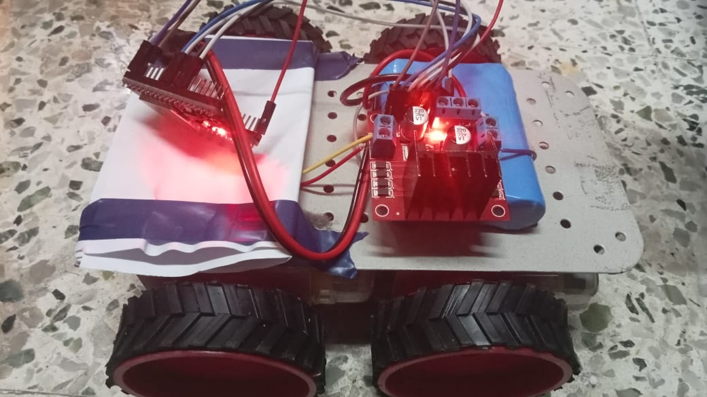
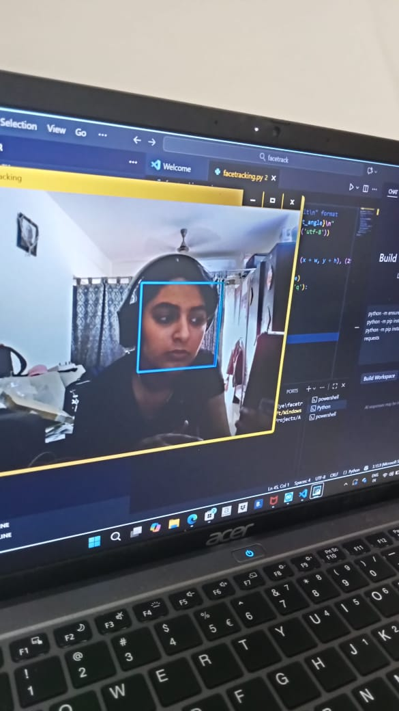

Hello! I'm Saumya Hathi, a Computer Engineering student at Fr. Conceicao Rodrigues College of Engineering (FRCRCE). I build robotics systems, AI models and automation projects. I love combining hardware and machine learning to solve real-world problems.
A fully functional robotic car using motor drivers, microcontrollers and autonomous navigation logic. This platform supports face tracking, wireless control and future AI upgrades.

A computer-vision based assistive tool that detects American Sign Language gestures and converts them into speech output, improving accessibility and communication.
